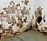
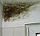
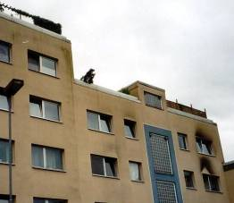
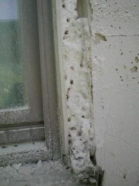
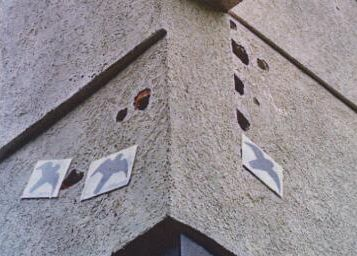
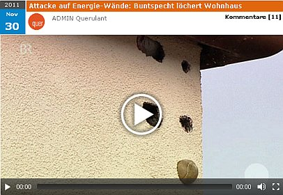
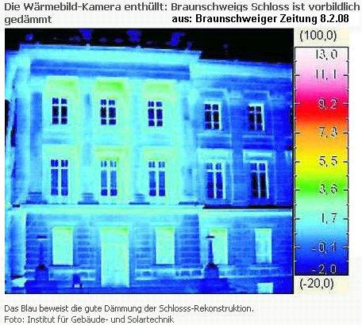

Weitere Datenübertragung Ihres Webseitenbesuchs an Google durch ein Opt-Out-Cookie stoppen - Klick!
Stop transferring your visit data to Google by a Opt-Out-Cookie - click!: Stop Google Analytics
Cookie Info. Datenschutzerklärung


 Altbau und Denkmalpflege Informationen - Startseite / Impressum
Altbau und Denkmalpflege Informationen - Startseite / Impressum
Inhaltsverzeichnis - Sitemap - über 1.500 Druckseiten unabhängige Bauinformationen
Fragen? +++ Alles auf CD +++ Das Handwerkerquiz +++ Das Planerquiz für schlaue Bauherrn
Kostengünstiges Instandsetzen von Burgen, Schlössern, Herrenhäusern, Villen - Ratgeber zu Kauf, Finanzierung, Planung (PDF eBook)
Altbauten kostengünstig sanieren
Heiße Tipps gegen Sanierpfusch im bestimmt frechsten Baubuch aller Zeiten (PDF eBook + Druckversion) ==>
Die härtesten Bücher gegen den Klimabetrug - Kurz + deftig rezensiert

Feuchte/Salz?
Heizung?
Fenster schwitzen?

Schimmelpilz wuchert?

Der Schwindel mit Wärmedämmung und Energiesparen 4
Schädlingsbefall und Spechte im WDVS und der Thermographie-Schwindel
Was an gedämmten Fassadenflächen wirklich passiert
zurück<- Kapitel -> vor
Der Schwindel mit der Wärmedämmung - Start
Kapitel 1 - Einstimmung: Schadensfälle an Dämmfassaden - Madenbefall, Absturz usw.
2 - Zur Sache: Schimmel und Algen durch WDVS
3 - Fassadendämmung naß veralgt?
4 - Schädlingsbefall und Thermographie
5 - Amtliche Energiesparversprechen / Energiesparverbrechen?
6 - Dämmung, EnEV und Schimmelpilzbefall
7 - Widerspruch Mieter gegen Mieterhöhung nach energetischer Sanierung / Gutachten für Widerspruch Eigentümer ./. WEG gegen Beschlußfassung energetische Sanierung Fassade
8 - Reboundeffekt / Problemdiskussion Innendämmung / Innenisolierung
9 - Wärmedämmung im Vergleich / Das Lichtenfelser Experiment
10 - Schwindel? Dämmung + Energiesparverordnung EnEV
11 - Befreiung und Ausnahme von Energieeinsparverordnung
12 - Lichtenfelser Experiment - Ein Fake?
13 - Altbausanierung - Lohnt sich Energiesparen durch Dämmung?
14 - Frost, Eis, Kondensat, Feuchte, Nässeschäden und Beulenpest auf WDVS - Wärmedämmverbundfassaden, Dämmfassaden, Fassadendämmung.
15 - Dämmstoffbrand, Fogging + Energiesparen
16 - Dachdämmung / Zwischensparrendämmung verpilzt?
Schädlingsbefall, Parasiten und Dämmstoff
Schön, daß die Ökowissenschaft inzwischen herausgefunden hat, daß wir mit Algen endlich und sogar das
angebliche "Klimakillergas CO2" beseitigen können:
"Am Botanischen Institut der Universität Köln konnte nachgewiesen werden, daß Grünalgen das Kohlendioxid innerhalb von nur zwei
Tagen vollständig beseitigten und zu interessanten Produkten umbauten. Ein Beitrag gegen den Treibhauseffekt?" - titelte die
Zeitschrift UMWELTSCHUTZ im Jahre 1996 in ihrer Wissenschaftsrubrik. Nun versteht man die allseits grünenden Öko-WDVS-Fassaden schon
besser, gelle?
Auch dünnblecherne Verkehrsschilder in der Nähe von hohen Bäumen veralgen und leisten so ihren Pflichtbeitrag zum Klimaschutz -
eine logische Folge ihrer Exposition, aber auch ihrer mangelhaften Speicherfähigkeit und kunstharzigen Oberfläche, beste
Voraussetzungen für Kondensatbeaufschlagung bei jedem feuchtwarmen Lüftchen und folgendem mikrobiellem Bewuchs
Schadensbeispiele zur Bauwerksdämmung / Gebäudedämmung / Bauwerksisolierung / Gebäudeisolierung bietet auch dieser
Superlink: DIMaGB.de - Infobereich: Alte Häuser und Wärmedämmung
Und hier mehr Fachinfo:
Algen an der Wand - Grünalgen und Schwarzalgen auf WDVS-Fassaden - Warum/Wieso?
Schimmel durch und trotz Dämmung/Schimmel an der Wand
Aus einer Leserzuschrift vom 10.7.02:
"Sehr geehrter Herr Fischer,
ich habe in "Immobilien Wirtschaft und Recht" Ausgabe 06/2002 einen Artikel über
Wärmedämmung gelesen. In diesem Artikel werden Sie mehrmals erwähnt. Beim Lesen des Artikels hatte ich den Eindruck, dass unser Objekt
gemeint ist.
Ich lebe in einer Eigentümergemeinschaft mit 32 Einheiten. Vor ca. 10 Jahren wurde unsere Fassade saniert. Es wurden Wärmedämmplatten
auf die Ziegelsteine aufgeklebt. Auf diese Platten wurde ein Kunststoffnetz aufgebracht. Danach wurde die gesamte Konstruktion
verputzt.
Nach ca. 4 Jahren bildeten sich auf der Nordseite im Bereich der Fenster schwarze Flächen, dass man meinen könnte, es habe bei uns
gebrannt. Der herbeigerufene Handwerker hat die Nordseite mit einem Hochdruckreiniger gereinigt. Es dauerte kein Jahr und die Fassade
sah wieder aus, als habe es bei uns gebrannt. Jetzt wollten die Handwerker die Fassade mit Fungiziden behandeln. ... Durch den Bericht
in "Immobilien Wirtschaft und Recht" wurde uns deutlich, welches Gift wir uns beinahe ins
Haus geholt hätten.

Die Fassade sieht inzwischen aus, dass unser Objekt Gesprächsthema im ganzen Ort ist. Leute, die uns nicht kennen, stufen uns ins
Asozialenmilieu ein, nur wegen dem Anblick unserer Fassade. ..."
In "Das Architekten-Magazin" 6/2001 beleuchtet Architekt Klaus Aggen an einem Wohnungsbau-Beispiel das Ausmaß des Problems:
"Die Volkswohnung GmbH Karlsruhe lässt zur Zeit von ihren Hochhäusern etwa 20.000 m2 applizierte, 4 cm starke
Polystyrol-Außendämmung wegen Wasserakkumulation und Mykosekulturen und "Altersschwäche" wieder entsorgen [...]."
In Bauhandwerk 1-2/2002 stellt Wolfgang Cyrol, Leiter Produktmanagement Fassadenbeschichtungen bei der mit allerlei Dämmexperten
offenbar reich Sto AG in Stühlingen zum Thema Algen, Vergrünung und algizide Vergiftung von Dämmfassaden dankenswerterweise fest:
"Es muss klargestellt werden, dass beweisbar alle Untergründe im Innen- und Aussenbereich mit Algen und/oder Pilzen befallen werden,
wenn die entsprechenden Wachstumsvoraussetzungen gegeben sind. Dies gilt nicht nicht nur für WDV-Systeme, sondern für alle
hochdämmenden Untergründe."
Solch klare Aussagen hätte man gern von allen Herstellern der Dämmwahnprodukte - von Mineralfilzen und -gespinsten über PUR- und
PS-Schäumen bis zu zerporten Ziegel- und Gasbetonschwämmen. 
Abbildung: Eine verschindelte Mineralwolledämmung auf Ziegelmauerwerk von außen - mit frischen Nässespuren der vollgesoffenen
Dämmung am Sockel, und von innen - die Schimmelpilzzucht (Bildquelle: Dipl.-Ing. Steier).
Doch wo dank warmer Nässe die botanische Flora wächst, ist die parasitenreich betierte Fauna nicht weit - und schon nach einem Jahr
ist manche Dämmfassade die perfekte Madenzuchtstation, in der der Parasitenbefall feuchtfröhliche Vermehrungsorgien abfeiert:

Aufnahme: Edmund Bromm, Fa. ISAR Bautenschutz, in München (aufgenommen während des von den verekelten Hausbewohnern veranlaßten
Abbruchs des madendurchwachsenen WDVS)
Na, wo so feine Maden wachsen, steigt selbst ein eingeschworener Borkenkäferliebhaber gerne um:

Aufnahme: Prof. Dipl.-Ing. Arch. Jens Fehrenberg, ö.b.u.v. Bausachverständiger, an einem WDVS-verschandelten Tagungshotel in
Norddeutschland.
Nachdem der Specht jedes Jahr seine Bruthöhle neu löchert - sehr standorttreu übrigens - finden fröhliche Stare als faule Nachmieter
ein prima Domizil. Man könnte bei derlei Zugvögeln durchaus auch mal an die in Hausbesitzerkreisen besonders beliebten Mietnomaden
denken. Schau, wie sie aus den Löchern lugen! Der Hausmeister scheint ein wahrer Tierfreund zu sein. Seine so tierliebe
Vergrämungsaktion ist bestimmt vom Landesbund für Vogelschutz, Abteilung Buntspechte und Grünspechte, beraten. Auf und vor allem unter
den tagsüber extrem erwärmten dünnen Kunstharzputzen der WDVS-Schwarte tummeln sich außerdem die Insekten in Massen. Die nächtliche
Abkühlung der nicht speicherfähigen Dämmschwarten liefert das notwendige Tauwasser, das dann den reich gedeckten Tisch für den
Parasitenbefall mit den nötigen Getränken versorgt. Juchhei! - Das lockt den Specht und verführt ihn zur Ansiedlung. Er klopft auch
gerne erst mal die Löcher, in denen dann die Insekten ihre Behausung finden. Vergrämungskonzepte mit Windspielen, Großvogelattrappen
(Storch, Rabe, Sperber ...) werden mit mehr oder weniger Erfolg angewendet.
Die SPD-nahe Zweimonats-Zeitschrift "Berliner Republik" im Vorwärts-Verlag schreibt dazu in ihrer letzten
Jahreausgabe 6/2008 unter "Spechte, Milben, Schimmelpilze":
Über die Risiken und Nebenwirkungen des Programms [Energetische Gebäudesanierung] wird allenfalls in Expertenkreisen diskutiert. Oder
im Internet.
Eine Kostprobe:
"Hilfe! Ein Specht hat unsere Fassade mit Wärmeschutzisolierung für sich entdeckt. Wie bekomme ich diesen Vogel wieder los?" Wer die
Stichwörter "Specht" und "WDVS" (Wärmedämmverbundsystem) im Netz eingibt, lernt das Leid von Hausbesitzern kennen: "Mein Nachbar hat dasselbe Problem. Zuerst hat der Specht ein Loch in die
Styro-Fassade gemacht, weil dahinter ein Hohlraum war, und sich ein Nest gebaut, und kaum ist er wieder ausgezogen, sind die
Eichhörnchen eingezogen und wohnen bis heute drin." Wer den Schaden hat, braucht für den Spott nicht zu sorgen. Unter dem Stichwort
"Spechtschäden an Fassaden" findet sich im Netz auch eine Immobilienanzeige für Spechte in Fassadenhöhlen: "Bequem zu erreichende, wohligwarme
Nisthöhle, in vor Raubtieren bestens geschützter Höhlenlage, mit Futtergarantie, samt Telefonanschluss, kostenlos zu vergeben" ..."
Am 24.02.2009 berichtet die Augsburger Allgemeine von einem lokalen Bauskandal rund um die Fassaden des vor nur acht Jahren
errichteten Augsburger Justizpalastes - Baukosten 38 Mio Euro.:
"Sanierungsfall:
Spechte löchern die Gerichtsfassade ... Unter anderem muss die Fassade für einen sechsstelligen Betrag renoviert werden. Ein Teil
der Arbeiten wurde bereits erledigt. Überraschend schnell setzten sich an den Außenmauern nämlich Algen an. Zudem übt ihr Putz auf
Spechte einen unwiderstehlichen Reiz aus. Sie hämmern Löcher in die wärmeschützende Isolierung."
Ja mei, die boarischen Specht hoit - vielleicht wollns den Hiasl aus den Klauen der Justiz befreien? Was rät nun das Augsburger
Käsblättli zur Abwehr der Spechtplage - die lieben Vögeli sind nämlich naturgeschützt, Luftgewehrbeschuß (ach, wie würde sich der
Schützenverein freuen, Samiel huif!), Schrotflinte und Giftköder bei Strafe verboten!? Lesen Sie selbst (Auszug):
"Das Tier stören, so oft es nur geht! Man kann z. B. nachts mit einer Taschenlampe in die Höhle leuchten; auch durch Lärm lassen
sich Spechte verscheuchen. Einen Schutz der Fassade bieten Drahtnetze. Auch Gegenstände, die sich bewegen und/oder reflektierende
Oberflächen haben, eignen sich zur Spechtabwehr, z. B. Windspiele oder Kinderdrachen."
Aha. Wir stellen uns nun die betroffenen Fassaden vor, wie die Hausbesitzer mit Taschenlampen an und in ihren Spechtlöchern nachts
herumlärmen - in steiler Höh! Aufi muaßi, dr Spächt rufft! Der vorherige Besuch eines Loriot'schen Jodelkurses erscheint zumindest
nicht nachteilig, wenn man zum stilaechten boarischen Fassadenkraxler mutieren wui. All die Windspiele und Kinderdrachen an, auf und
über Deutschlands WDVS-Fassaden. Herrlich! Und dann erst die engmaschigen Vernetzungen und Vergitterungen (an Justizpalästen)! Was
mag sich diesmal das Ausland wieder denken? Kommt das der von deutschen Innenpolitikern und Stadtplanern geförderten kontrollierten
Käfighaltung der deutschen Duckmäuser nicht sehr entgegen? Und was ist eigentlich mit der Haftung der Dämmplaner allerorten, denen ihre
Berufsordnung doch "wirtschaftliche Planung" vorschreibt und die bezüglich der niemals wirtschaftlichen Fassadendämmung so tun, als
ob sie niemals was vom Wirtschaftlichkeitsgebot gem. § 5 des Energieeinsparungsgesetzes EnEG gehört hätten? Vielleicht weil ihnen sonst
der so sehr freundliche und hilfsbreite und geschenkebeladene Dämmstoffberater der Firma muellermeyerschultze.de nicht mehr die
ganz und gar nicht produktneutrale Fassadenplanung kostenlos ins Planungs- bzw. Baubüro liefert? Wollmer wetten, daß auch bei diesem
Justizpalast wie bei allen anderen keine einzige Ausschreibung den gesetzlichen und vertragsrechtlichen und haushaltsrechtlichen
Ansprüchen an die von jedem Planer pflichtgemäß geschuldete produktneutrale Planung genügt? Sind also die in der Unterwolle der
Baustoffproduzenten herangebrüteten untreuen Planer das wahre Parasitenproblem für den öffentlichen und auch den privaten Bauherren?
Ein Blick in die Ausschreibung / das Leistungsverzeichnis gäbe Antwort: "Produkt XY oder gleichwertig" - Bingo!
Doch zurück zu den Spechtschäden. Sie wachsen für Hausbesitzer/Hauseigentümer und vor allem die dämmwütigen Wohnungsbauunternehmen der
Wohnungswirtschaft also zu einem zunehmenden Problem heran. Tauben waren gestern, heute ist Specht angesagt! Wenn das nur das einzige
Risiko wäre für die Dämmerei, könnte das meinetwegen ja noch angehen. Dem ist aber leider nicht so ...
Bauforum: Specht macht Löcher in unsere
wärmegedämmte Fassade!!! - birdnet.de: Spechte perforieren wärmegedämmte Hauswände -
Kein Aprilscherz:
Hotline für Spechtschäden. Wie Berliner Spechte die Wohnungsunternehmen GESOBAU, GEWOBAG, DEGEWO und andere Wohnungseigentümer, die
(wohl unter Mißachtung jeglicher Wirtschaftlichkeitserfordernisse zulasten der Mieter Vollwärmeschutzfassaden vor die Massivfassade
klebten?) alljährlich zum löchrigen Wahnsinn treiben und neue Geschäftsideen zum Erblühen -
Papageien / Halsbandsittiche als Fassadenbrüter im WDVS eines Heidelberger
Altenheims
Unser Rechtssystem hält eigentlich die passenden Paragrafen auch für solche Bauschadens-Phänomene bereit.
Als Gegenwehr gegen die ökologische Wahrheit am Bau entfalten die gewerblichen, beamteten und gewählten Dämmfans jedoch ein
Medientrommelfeuer bis hin zur steuergeldverschlingenden "Motivationskampagne Klimaschutz in privaten Haushalten", das auf den
geringstanzunehmenden Verstand der offensichtlich seit vielen Jahrhunderten schon professionell durch Politik, Industrie, Handwerk,
Medien, Schulsystem usw. vollverblödeten oder eben typisch-deutsch-leichtgläubigen Bevölkerung zugeschnitten ist.
Ein skandalöser und tragischer Höhepunkt des parasitenbefallenen Niedrigenergiehauspfusches dann der bis zum gräßlichen Abriß
gesteigerte Ameisenbau in Burscheid. Aus einem
Interview des Kölner
Stadtanzeigers:
"Nach 600-facher Überdosierung eines Insektizids durch einen Kammerjäger musste ein Neubau abgerissen werden. [...]
Schädlingsbekämpfer Stefan Kittner [...] zum umstrittenen Abbruch des „Ameisenhauses“.
TIM GATTER: Herr Kittner, das in Burscheid-Rötzinghofen nach dem fehlerhaften Einsatz eines Schädlingsbekämpfers abgerissene, gerade
mal zwei Jahre alte Eigenheim beschäftigt nach wie vor viele Leser. Es bleiben offene Fragen. Besteht gerade bei
Niedrig-Energiehäusern eine höhere Gefahr des Schädlingsbefalls?
STEFAN KITTNER: Die Probleme bei besonders gedämmten und abgedichteten Häusern sind größer als bei konventionellen Bauten. Häufig führt
die Luftdichtheit dazu, dass den Schädlingen Tür und Tor geöffnet wird. [...] Bei dem betroffenen Eigenheim konnte die Luft nicht
richtig zirkulieren. Die ... Ameisen haben ... sich vermutlich in der feuchten Zone unter der Dämmung ausgebreitet. [...]
TIM GATTER: Warum haben sich die Insekten in die Dämmplatten aus Styropor eingefressen?
KITTNER: In den Löchern haben die Ameisen die Eier abgelegt. [...]"
Und hier: zu weiteren Mediendokumenten zu
diesem Niedrigenergienässefangbau. Wie raffiniert muß die Dämmstoffpropaganda wohl angepackt werden, damit junge und arglose
Bauherren ihre Lebensinvestition so vernichten? Sowas wird den Vertrieblern und Kommunikationsbeauftragten in hochkarätigen
Marketingseminaren Marke "Bauerfängerei" gelehrt - für Anfänger bis Fortgeschrittene ...
Vogel vs. Energiewände: Buntspecht löchert Wohnhaus - quer - Bayerisches Fernsehen - ARD:

Themenlink: DIMaGB.de: Rezension Sto-Bauherrn-"Ratgeber"
Bewährte Schlagworte wie Arbeitsplätze, Klimaschutz und Nation gewinnen die doitsche Schnäppchenfangemeinde wie bei der
Wind- und Solartech für die volksbeglückenden Machenschaften unserer gesellschaftlichen Elite.
Beispiel:
ibau Planungsinformationen 10.12.1999
"Wärmedämmung als Jobknüller
Wärmeschutz bei Altbausanierung bringt 400.000 Arbeitsplätze
Hamburg (ots) - Die Umweltorganisation Greenpeace und die Industriegewerkschaft Bauen-Agrar-Umwelt (IG BAU) haben in Hamburg
eine Studie vorgestellt, die die großen Potenziale der Gebäudesanierung für den Klimaschutz und den Arbeitsmarkt belegt. Ein
nationales Wärmeschutzprogramm für die Isolierung und Sanierung von Wohnungen kann bis zum Jahr 2020 die Emissionen des Treibhausgases
Kohlendioxid im Gebäudebestand um insgesamt 58 Prozent senken (Vergleichsjahr 1999). Der Energieverbrauch der Gebäude wird dabei mehr
als halbiert. Darüberhinaus würden dauerhaft mehr als 400.000 Arbeitsplätze in der Baubranche, im Handwerk und in anderen
Wirtschaftszweigen entstehen."
Kommentar: Ungenannt die vielen Arbeitsplätze im Medizinbereich wegen der in den "sanierten" Schimmelbuden verreckenden Bewohner. Daß
die Fassadenpatscher, Wandbeschichter und -schmierer an den durch Dämmwahn erzeugten Bauschäden florieren, mag sein. Doch zu welchem
Preis? Daß sich weder CO2 als Treibhausgas eignet noch irgendwelche Energie durch
Dämmstoffverpackung sparen läßt, sollte bekannte sein. Lesen Sie die Belege auf der Energiesparseite und den
bundesamtlichen Overkill des Ökoschwindels - "Klimafakten". Weiter im Text:
"Die Organisationen sehen die Studie des Wuppertal Instituts für Klima, Umwelt, Energie als klares Signal an die
Bundesregierung, dass die Bausanierung ein Schwerpunkt künftiger Klimaschutz- und Arbeitsmarktpolitik werden muss. Jan Rispens,
Klimaexperte bei Greenpeace: "Bundeskanzler Schröder kann auf einen Schlag zwei Ziele erreichen: einen Meilenstein für sein
angekündigtes Klimaschutzprogramm setzen und 400.000 Arbeitsplätze schaffen. Also, ran an die Wärmedämmung!" [...]"
Über die Wissenschaftlichkeit des Wuppertal Instituts für Klima usw. laßt uns mit Goethe schweigen: Man fühlt die Absicht und man ist
verstimmt (Torquato Tasso). Daß IG BAU und Greenpeace dem Bundeskanzler eine solche Rhetorik gönnen! Ist es denn wirklich schon so
schlimm? Und wer soll dann die 8 Milliarden Mark, die 400.000 Arbeitsplätze als Finanzierungshintergrund jährlich kosten, bezahlen?
Unsere lieben Multikultis aus dem Drogen- und Sozialhilfeertrag?
Thermographie-Schwindel
Die Marktbeeinflussung wird dann praktisch als "Greenpeace, die Wärmedämmvollzugs-Prüf-, Polizei- und
Meldebehörde" umgesetzt, wie diese Meldung der Nürnberger Nachrichten vom 24.6.00 belegt:
"Ordnungsgeld von 500.000 Mark
Nun wird es hart
Siedlungswerk Nürnberg fordert von Greenpeace Unterlasssung
Das Siedlungswerk Nürnberg GmbH hat der Greenpeace Gruppe Mittelfranken eine Unterlassungserklärung zugeschickt
[...] 500.000 Mark Ordnungsgeld, ersatzweise sechs Monate Ordnungshaft angedroht.
Greenpeace hatte mit einer Wärmebild-Kamera festgestellt, dass auch an komplett sanierten SWN-Häusern teilweise
die Wärmedämmung vergessen wurde und die Mieter unnötige Heizkosten haben [...] Kritik veröffentlichte Greenpeace auf [...] Website
http://www.greenpeace.de/mittelfranken. Über ein Haus heißt es [...], es sei in
miserablem Zustand, selbst der ungeheizte Dachboden strahle erheblich Wärme ab. Dazu [...] Überschrift: "Hier muss man sich warm
anziehen.""...

Bild aus BYG-TEK 25.10.04
Link: Frage: Wieso hat der Raum an der Ecke zwei
unterschiedlich temperierte Außenwände? Details zum Schwindel mit Thermografie / Wärmebildaufnahmen
"... Solche Passagen zitieren die SWN-Anwälte und verlangen von Greenpeace zu unterlassen, den "Zustand von im Eigentum meiner
Mandantin stehender Gebäude zu kritisieren und Ihre Untersuchungsergebnisse ohne Zustimmung meiner Mandantin ... zum Gegenstand eine
Website im Internet zu machen." SWN sehe darin sein Ansehen als Wirtschaftsunternehmen beschädigt. [...] Greenpeace [solle] eine
Unterlassungserklärung unterschreiben.
Greenpeace sieht [dafür] keinen Anlass [...] ihre Aussagen würden von SWN inhaltlich in keiner Weise bestritten. Eine Schmähung des
SWN [...] liege nicht vor. "Die Bezeichnung der Gebäude als miserabel gedämmt stellt nach unserer Auffassung eine Bewertung
unbestrittener Fakten dar, die unter das Recht auf freie Meinungsäußerung fällt."
Dann am 7.7.00:
"Keine Klage gegen die Greenpeace-Gruppe Mittelfranken
Siedlungswerk entwarnt
Wilfried Zecha: Umfassende Wärmedämmung verteuert Miete
Das Siedlungswerk Nürnberg (SWN) hat Entwarnung signalisiert: Es wird die Greenpeace-Gruppe Mittelfranken nicht verklagen. Aber
es lehnt die [...] geforderte Vollwärmedämmung [...] ab - mit Rücksicht auf die Mieter [...] . ...
[Geschäftsführer] Zecha wies [...] darauf hin, dass umfassende Wärmedämm-Maßnahmen [...] die Mieter schwer belaste. [...]
Erhöhung des Mietzinses von mindestens einer Mark pro Quadratmeter Wohnfläche [...] . Demgegenüber hätten die Mieter eine
[vermutete, d.h. nur berechnete, Anm. KF] Einsparung an Heizenergie von lediglich 15 Pfennigen pro Quadratmeter zu erwarten.
[...] Mieter eine solche Verteuerung nicht akzeptieren. Umfassende Fassadendämmung würde dem Grundsatz der Wirtschaftlichkeit
widersprechen. ..."
Zum technisch-wirtschaftlichen Hintergrund:
1. Wärmekameraaufnahmen am Tag zeigen Dämmfassaden, die Solarstrahlung nicht wegspeichern können, als Energieverschwender. In der
Nacht jedoch strahlen Massivwände die tagsüber eingestrahlte Solarenergie wieder etwas ab. Und die Wärmebild-Analyse wertet dies dann
als Energieverlust mangels Dämmung. Dabei kann eine Wärmebildaufnahme nur Wärmestrahlung zeigen, egal wo diese herkommt - sogar von
eingestrahlter Sonne. Dümmer geht´s nümmer.
Geheizte Säulen am ansonsten vollwärmegedämmten Braunschweiger Schloß??? Ha, ha, ha!:

So funktioniert er, der Thermographenschwindel. In einer Minute sind Sie schlauer - Norddeutscher Rundfunk NDR: Konrad Fischer
entlarvt Energieberatertricks mit der Wärmebildkamera:
2. Dämmmaßnahmen kosten den Mieter viel Geld, lt. SWN 0,5 EUR/qm. Dem steht eine theoretische, mit dem U-Wert gerechnete Einsparung
von jährlich ca. 7,5 Cent gegenüber. Unwirtschaftlicher kann man sein Geld kaum rausbleuen. Vor allem, wenn man weiß, daß
Dämmen/Dichten das Wohnklima zerstört und ein praktischer Nachweis der Energieeinsparung durch nachträgliche Dämmung nicht existiert
(sogar lt. Auskunft des Wirtschaftsministeriums und eines großen Dämmstoffproduzentenverbandes gegenüber einem skeptisch
nachfragenden Bauredakteur). Im Gegenteil...
Kommentar: Kämpft Greenpeace für seine Mineralöl- und Chemiesponsoren? Was sind die Ergebnisse des diesbezüglich geschlossenen
"Burgfriedens" (lt. unautorisierter Aussage eines leitenden Greenpeace-Mitarbeiters)?
Hintergrundinfo dazu auf der Literaturseite.
Allerdings bietet auch Greenpeace mehrere Fraktionen. Es gibt sie: zutreffend informierte Aktivisten. Aus
einem vorliegenden Schreiben von Greenpeace Hamburg an den Fachverband Wärmedämmverbundsysteme vom 28.6.00:
"... Leider werden nachwievor fast sämtliche Hartschaumstoffe aus Polystyrol und auch noch einige aus Polyurethan mit "Dauergiften"
versetzt. Hierzu zählen wir insbesondere die eingesetzten Flammschutzmittel wie HBCD in Polystyrol oder z.B. TCEP in Polyurethan.
Diese "Dauergifte" sind in der Regel schwer abbaubar, langlebig und können sich über die Nahrungskette anreichern. ...
Darüberhinaus ist die Produktion und Entsorgung dieser Stoffe aus unserer Sicht noch mit ungelösten Problemen behaftet ...
Vor diesem Hintergrund wird das gemeinsam mit der IG BAU entwickelte Gütesiegel "Das Plus für Arbeit und Umwelt" nicht vergeben,
wenn Dämmstoffe verbaut werden, die "Dauergifte" enthalten. Dies schließt üblicherweise die Verwendung von Polystyrol und Polyurethan
aus. ..."
Nun ist eine folgenschwere Dämmung auch ein perfekter Start für nachfolgende Giftverseuchung und
kostenexplosive Kaputtsanierung des Bauwerks, wie die Stuttgarter Zeitung am 25.2.03 ausführt:
"Eröffnung der neuen Galerie verschoben
Die historische Pfleghofscheune in der Leonberger Altstadt ist vom Schimmelpilz befallen
... Die neue Galerie, die im Mai öffnen sollte, wird erst im Herbst Publikum sehen. Der Grund: Schimmelpilz hat sich in Mauern und Gebälk der Pfleghofscheune eingenistet.
Vom Ludwig Laibacher
[...] ausgeprägte Pilzkulturen in Holz und Mauerwerk der historischen Pfleghofscheune [...]. (Die Beseitigung)
werde [...] teuer [...] aus der Eröffnung im Frühling wird erst mal nichts.
Die Pilzsporen seien [...] in der Luft vorhanden gewesen [...] so lange alles zugig im Haus war, gab es auch
keine Schäden. Erst nach dem Einbau von Dämmplatten im Dach und nach einem ersten Heizen der alten Scheune hätten die Sporen sich
eingenistet und ihre Zerstörungsarbeit begonnen. Nun hoffen die Experten, dem Pilz mit Borwasser und Imprägniermitteln beizukommen,
zumindest was die Balken anlangt. Teile der Hölzer müssen "gesundgeschnitten" werden [...]. Viel härter trifft die staatlichen
Denkmalpfleger allerdings, dass wegen des Schimmelpilzes sehr viel vom originalen Mauerwerk nicht mehr zu retten ist. ...
Zähneknirschend mussten die Kulturbewahrer zustimmen, dass die befallenen Gefache ausgeschlagen und durch Backsteine ersetzt werden.
..."
Oh je. Schlimmer kann man Altbauten wirklich nicht kaputtsanieren. Erst abdämmen und -dichten, dann wasserdampferzeugende
Baustellenheizung mit Kondensateintrag auf der unterkühlten Fachwerkshülle, dann schwachverständige Überreaktion beim
Substanzaustausch, und abschließend boratige Vollvergiftung.
Und so einfach wäre es gewesen: Heizen nur bei gesicherter Feuchteablüftung und mittels kontrollierter Wärmestrahlung, Dachausbau
nur mit speicherfähiger "Dämmung" und ohne Luftdichtfolie, Schimmelbekämpfung nur mit Alkoholreinigung (Haushaltsspiritus), evtl.
Dauerbekämpfung und Vorbeugung mit ebenso ungiftigem mineralisch-alkalischem Holzschutz, Vorbeugung nur mit
Hüllflächentemperierung im erforderlichen Temperaturprofil, Fachwerkreparatur ohne
Norm- und Handwerksschwindel. Dafür darf man halt keine Experten bemühen, die dann nicht nur die
sinnlosen Mehrkosten, sondern auch die "bauphysikalischen" Mängel- und Schadensbeseitigungskosten dem Bauherrn aufdrücken.
Weiter: Der Schwindel mit der Wärmedämmung - Kapitel 5
Angebliche und wirkliche Fachliteratur der Dämmpropaganda und ihrer entschiedensten Gegener sowie mehr oder
weniger nützliche Produkte rund ums Energiesparen, den Schimmelpilz und die Feuchteproblematik - Sie entscheiden!
Altbau und Denkmalpflege Informationen Startseite
Energiesparseite
Noch Fragen?
© Konrad Fischer